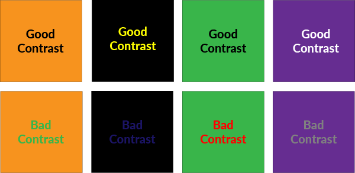

How to achieve universal design
The 7 principles of design can be applied to technology, features, products, the environment etc. I’m going to offer some tips on how to achieve universal design in web and mobile applications through proper use of screen readers, color, size, and structure.
Screen readers
Features can be implemented within a website’s code that help provide accurate and helpful information for the blind or visually impaired. One example of this is alternative text or alt text. Alternative text briefly and accurately describes what is being shown in an image. The HTML syntax for alternative text is <img alt="text">
The alt text for the image below would be: <img alt="closed macbook laptop on a sofa">
If you used a screen reader on this page, the alternative text for the image above would be read out loud. Adding input field labels also provides guidance for screen readers. In HTML, the <label> element provides a short and clear description of what the form field is. A label is often used in conjunction with an <label> element. The input element helps the user know what should be inputted.
Syntax of a date input field:
<label for="date">Date (dd-mm-yyyy)</label>
<input type="text" name="date" id="date" />
Color
When designing elements on a page, having good color contrast is very important because it ensures readability. Color blind users especially find it difficult to read text when there is insufficient color contrast. It’s best to avoid pairing dark text/elements with a dark background and light text/elements with a light background. Black text over a white background has the best readability.
There are many tools available that can test your website's color contrast. Some examples are WebAIM WAVE Toolbar and Colour Contrast Analyser.
Size
Similar to color, choosing the correct font/icon/image size is very important for a website or app’s readability. Having text that is too small is very challenging for people with visual impairments. It’s generally agreed upon that 16pt should be the minimum font size. When writing code, it’s important to take into account resizable text.
Web browsers allow users to zoom in or resize a page, and that might disrupt your content if your code interferes with the resized text. In HTML, it’s recommended to use “em” for your font size instead of “px” because everything remains relative to each other.
Making sure your text adjusts accordingly to different screen sizes is another essential function. This can be done using media queries; they allow you to customize the way your web page is displayed on different devices.
Structure
It is important to use headings because they provide structure to your page. HTML has header tags. They range from <h1> to <h6> and each heading level changes in font size. <h1> is the main heading and it’s found at the top of the page, <h2> is referred to as a subheading and <h3> is a sub sub heading.
Proper use of headers allow users to navigate through your page easily, find relevant information quicker and it’s also helpful when for someone who uses a screen reader. The WebAIM WAVE tool has an outline feature that shows you the heading structure of your page, letting you know if you’re missing anything.
Source
https://www.csun.edu/universal-design-center/web-accessibility-criteria-headings-and-titles